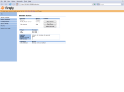

Firefly Media Server
From Wikipedia, the free encyclopedia
|  | |
| Developer(s) | Ron Pedde |
| Initial release | 0.1.0 |
| Stable release | 0.2.4.2 (April 19, 2008 (2008-04-19)) [+/−] |
| Preview release | SVN/Nightly Builds (SVN) [+/−] |
| Written in | C |
| Available in | English |
| Type | Media Server |
| License | GNU GPL |
| Website | http://www.fireflymediaserver.org/ |
{kind=link}
{kind=link}
Firefly Media Server (formerly mt-daapd) is an open-source media server (or daemon) for the Roku SoundBridge and iTunes. It serves media files using Roku Server Protocol (RSP) and Digital Audio Access Protocol (DAAP).
Contents[hide] |
[edit] Features
Its features include:
- Support for running on Unix/POSIX platforms
- Support for running on Microsoft Windows and Mac OS X
- Support for running on the Apple Inc. iPhone and iPod touch
- Support for MP3, AAC, Ogg, FLAC, and WMA
- Support for Roku SoundBridge via RSP
- Support for on-the-fly transcoding of Ogg, FLAC, ALAC, and WMA
- On Windows platforms, on-the-fly transcoding of WMA Lossless, WMA Pro and WMA Voice.
- Web-based configuration
- Support for user-created smart playlists
- Integration with iTunes library including reading playlists
- Supports serving streaming radio stations
Firefly Media Server was formerly known as mt-daapd. It was renamed when it adopted new features such as support for RSP and support for Microsoft Windows and Mac OS X.
[edit] Latest development
Firefly Media Server is not under active development. There has been an abortive effort to continue this project as Firefly2 Media Server. In July 2009, development continues on a Linux/FreeBSD fork, forked-daapd. The latest version of forked-daapd is v0.12. See announcements at [1], [2] and [3].
[edit] See also
{kind=link}
[edit] External links
- Latest FireFly Media Server Build And Also How To Compile It
- Firefly Media Server website
- mt-daapd SourceForge Project
- Firefly Client - a Java Firefly Client (Windows / Linux / Mac) (including applet version) (SourceForge Project)
- CrossFire Firefly client for the Apple iPhone/Touch (SourceForge Project)
- SoundBox Firefly client for Windows / Mac OS X
- SilverPlay Firefly client for Windows / Mac OS X written in Silverlight
| This network-related software article is a stub. You can help Wikipedia by expanding it. |
{kind=link}